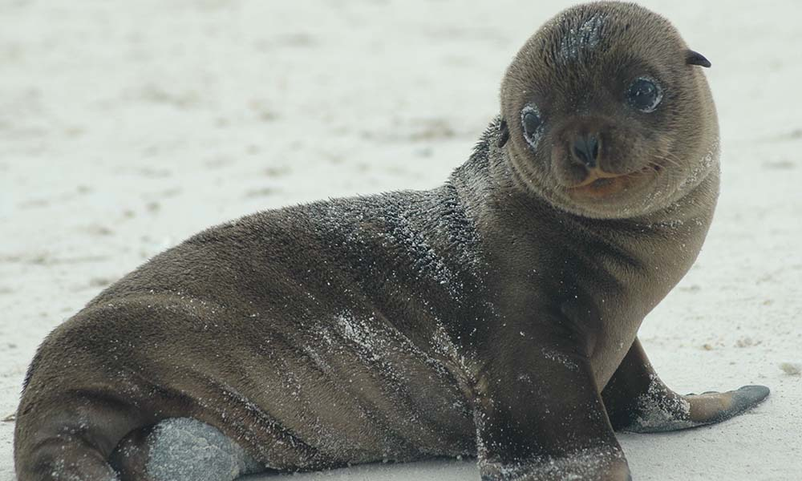
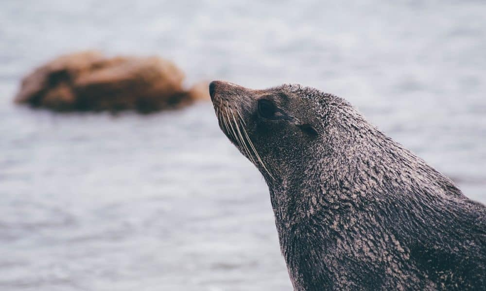

Thông tin về loài hải cẩu

Họ Hải cẩu thật sự hay còn gọi là họ Chó biển, hải cẩu không tai (danh pháp: Phocidae) là một trong ba họ thú biển chính của liên họ Chân vịt (Pinnipedia), Phân bộ Dạng chó (Caniformia), bộ Ăn thịt (Carnivora). Đôi khi chúng được gọi là hải cẩu trườn (crawling seals) nhằm phân biệt với hải cẩu lông và hải sư (Otariidae) do đặc điểm tứ chi không nâng đỡ nổi phải lết khi di chuyển trên đất liền. Hải cẩu sống chủ yếu dưới nước trong các đại dương cả hai bán cầu bắc và nam, tập trung vào các vùng hàn và ôn đới. Tên gọi vô nhĩ do các loài trong họ có đặc điểm chung không có tai ngoài. Họ này gồm khoảng 13 chi với 20 loài nằm trong 2 phân họ, 4 tông.

Otariidae là một họ bao gồm các loài sư tử biển và hải cẩu lông mao trong phân bộ dạng chó. Họ này gồm 15 loài còn sinh tồn được xếp vào 7 chi. Otariidae thích nghi với đời sống nửa nước nửa trên cạn, tìm kiếm thức ăn và di chuyển trong nước, nhưng làm tổ sinh sản thì trên đất liền hoặc trên băng. Chúng sống trong các vùng nước cận cực, ôn đới và xích đạo trên khắp Thái Bình Dương và các đại dương phía nam và phía nam Ấn Độ Dương và Đại Tây Dương. Chúng không có mặt ở bắc Đại Tây Dương.